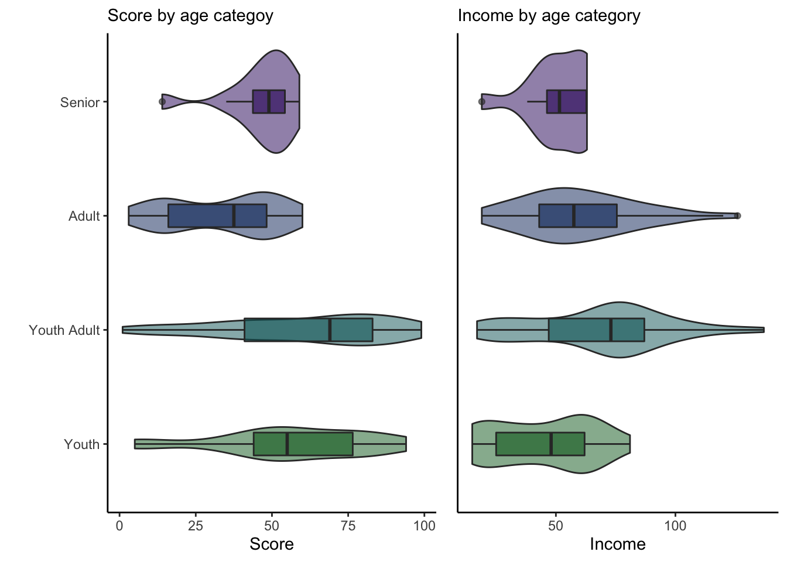

El propósito de este proyecto es aplicar un modelo de machine learning para la clasificación de un grupo de clientes de un centro comercial. Vamos a realizar un análisis de las características que presentan y que les fueron relevadas durante el experimento para intentar responder preguntas del tipo:
Segmentar a nuestros clientes nos permitirá aplicar una estrategia de venta enfocada en las necesidades de cada grupo actuando de manera más personalizada que si lo haríamos en general. Nos enfocaremos en el análisis de clusters, una herramienta de clasificación tan potente como elegante y ampliamente utilizada en marketing y en la industria en general.
El dataset con el que trabajaremos es el Mall Customer Segmentation Data el cual puede descargarse de Kaggle y es de uso público. Cada fila de este dataset representa un cliente del centro comercial. Las columnas representan los atributos medidos los cuales se detallan a continuación:
CustomerID: número único de identificación del cliente.Gender: Female y Male.Age: edad de los clientes.Annual Income (k$): ingreso anual de los clientes en miles de dolares.Spending Score (1-100): es el puntaje de gasto asignado por el centro comercial de acuerdo al comportamiento de compra del cliente.
# # Cargamos los paquetes necesarios
# ===================
library(tidyverse)
library(ggpubr)
library(GGally)
library(factoextra)
library(RColorBrewer)
library(ggplotify)
library(hrbrthemes)
library(dendextend)
library(kableExtra)
library(plyr)
# Configuración general de gráficos
theme_set(theme_classic())
# Cargamos rl Dataset
# ====================
clientes <- read_csv('mall.csv')
clientes %>%
kbl(align = 'c') %>%
kable_styling() %>%
scroll_box(width = "100%", height = "200px")| CustomerID | Gender | Age | Annual Income (k$) | Spending Score (1-100) |
|---|---|---|---|---|
| 1 | Male | 19 | 15 | 39 |
| 2 | Male | 21 | 15 | 81 |
| 3 | Female | 20 | 16 | 6 |
| 4 | Female | 23 | 16 | 77 |
| 5 | Female | 31 | 17 | 40 |
| 6 | Female | 22 | 17 | 76 |
| 7 | Female | 35 | 18 | 6 |
| 8 | Female | 23 | 18 | 94 |
| 9 | Male | 64 | 19 | 3 |
| 10 | Female | 30 | 19 | 72 |
| 11 | Male | 67 | 19 | 14 |
| 12 | Female | 35 | 19 | 99 |
| 13 | Female | 58 | 20 | 15 |
| 14 | Female | 24 | 20 | 77 |
| 15 | Male | 37 | 20 | 13 |
| 16 | Male | 22 | 20 | 79 |
| 17 | Female | 35 | 21 | 35 |
| 18 | Male | 20 | 21 | 66 |
| 19 | Male | 52 | 23 | 29 |
| 20 | Female | 35 | 23 | 98 |
| 21 | Male | 35 | 24 | 35 |
| 22 | Male | 25 | 24 | 73 |
| 23 | Female | 46 | 25 | 5 |
| 24 | Male | 31 | 25 | 73 |
| 25 | Female | 54 | 28 | 14 |
| 26 | Male | 29 | 28 | 82 |
| 27 | Female | 45 | 28 | 32 |
| 28 | Male | 35 | 28 | 61 |
| 29 | Female | 40 | 29 | 31 |
| 30 | Female | 23 | 29 | 87 |
| 31 | Male | 60 | 30 | 4 |
| 32 | Female | 21 | 30 | 73 |
| 33 | Male | 53 | 33 | 4 |
| 34 | Male | 18 | 33 | 92 |
| 35 | Female | 49 | 33 | 14 |
| 36 | Female | 21 | 33 | 81 |
| 37 | Female | 42 | 34 | 17 |
| 38 | Female | 30 | 34 | 73 |
| 39 | Female | 36 | 37 | 26 |
| 40 | Female | 20 | 37 | 75 |
| 41 | Female | 65 | 38 | 35 |
| 42 | Male | 24 | 38 | 92 |
| 43 | Male | 48 | 39 | 36 |
| 44 | Female | 31 | 39 | 61 |
| 45 | Female | 49 | 39 | 28 |
| 46 | Female | 24 | 39 | 65 |
| 47 | Female | 50 | 40 | 55 |
| 48 | Female | 27 | 40 | 47 |
| 49 | Female | 29 | 40 | 42 |
| 50 | Female | 31 | 40 | 42 |
| 51 | Female | 49 | 42 | 52 |
| 52 | Male | 33 | 42 | 60 |
| 53 | Female | 31 | 43 | 54 |
| 54 | Male | 59 | 43 | 60 |
| 55 | Female | 50 | 43 | 45 |
| 56 | Male | 47 | 43 | 41 |
| 57 | Female | 51 | 44 | 50 |
| 58 | Male | 69 | 44 | 46 |
| 59 | Female | 27 | 46 | 51 |
| 60 | Male | 53 | 46 | 46 |
| 61 | Male | 70 | 46 | 56 |
| 62 | Male | 19 | 46 | 55 |
| 63 | Female | 67 | 47 | 52 |
| 64 | Female | 54 | 47 | 59 |
| 65 | Male | 63 | 48 | 51 |
| 66 | Male | 18 | 48 | 59 |
| 67 | Female | 43 | 48 | 50 |
| 68 | Female | 68 | 48 | 48 |
| 69 | Male | 19 | 48 | 59 |
| 70 | Female | 32 | 48 | 47 |
| 71 | Male | 70 | 49 | 55 |
| 72 | Female | 47 | 49 | 42 |
| 73 | Female | 60 | 50 | 49 |
| 74 | Female | 60 | 50 | 56 |
| 75 | Male | 59 | 54 | 47 |
| 76 | Male | 26 | 54 | 54 |
| 77 | Female | 45 | 54 | 53 |
| 78 | Male | 40 | 54 | 48 |
| 79 | Female | 23 | 54 | 52 |
| 80 | Female | 49 | 54 | 42 |
| 81 | Male | 57 | 54 | 51 |
| 82 | Male | 38 | 54 | 55 |
| 83 | Male | 67 | 54 | 41 |
| 84 | Female | 46 | 54 | 44 |
| 85 | Female | 21 | 54 | 57 |
| 86 | Male | 48 | 54 | 46 |
| 87 | Female | 55 | 57 | 58 |
| 88 | Female | 22 | 57 | 55 |
| 89 | Female | 34 | 58 | 60 |
| 90 | Female | 50 | 58 | 46 |
| 91 | Female | 68 | 59 | 55 |
| 92 | Male | 18 | 59 | 41 |
| 93 | Male | 48 | 60 | 49 |
| 94 | Female | 40 | 60 | 40 |
| 95 | Female | 32 | 60 | 42 |
| 96 | Male | 24 | 60 | 52 |
| 97 | Female | 47 | 60 | 47 |
| 98 | Female | 27 | 60 | 50 |
| 99 | Male | 48 | 61 | 42 |
| 100 | Male | 20 | 61 | 49 |
| 101 | Female | 23 | 62 | 41 |
| 102 | Female | 49 | 62 | 48 |
| 103 | Male | 67 | 62 | 59 |
| 104 | Male | 26 | 62 | 55 |
| 105 | Male | 49 | 62 | 56 |
| 106 | Female | 21 | 62 | 42 |
| 107 | Female | 66 | 63 | 50 |
| 108 | Male | 54 | 63 | 46 |
| 109 | Male | 68 | 63 | 43 |
| 110 | Male | 66 | 63 | 48 |
| 111 | Male | 65 | 63 | 52 |
| 112 | Female | 19 | 63 | 54 |
| 113 | Female | 38 | 64 | 42 |
| 114 | Male | 19 | 64 | 46 |
| 115 | Female | 18 | 65 | 48 |
| 116 | Female | 19 | 65 | 50 |
| 117 | Female | 63 | 65 | 43 |
| 118 | Female | 49 | 65 | 59 |
| 119 | Female | 51 | 67 | 43 |
| 120 | Female | 50 | 67 | 57 |
| 121 | Male | 27 | 67 | 56 |
| 122 | Female | 38 | 67 | 40 |
| 123 | Female | 40 | 69 | 58 |
| 124 | Male | 39 | 69 | 91 |
| 125 | Female | 23 | 70 | 29 |
| 126 | Female | 31 | 70 | 77 |
| 127 | Male | 43 | 71 | 35 |
| 128 | Male | 40 | 71 | 95 |
| 129 | Male | 59 | 71 | 11 |
| 130 | Male | 38 | 71 | 75 |
| 131 | Male | 47 | 71 | 9 |
| 132 | Male | 39 | 71 | 75 |
| 133 | Female | 25 | 72 | 34 |
| 134 | Female | 31 | 72 | 71 |
| 135 | Male | 20 | 73 | 5 |
| 136 | Female | 29 | 73 | 88 |
| 137 | Female | 44 | 73 | 7 |
| 138 | Male | 32 | 73 | 73 |
| 139 | Male | 19 | 74 | 10 |
| 140 | Female | 35 | 74 | 72 |
| 141 | Female | 57 | 75 | 5 |
| 142 | Male | 32 | 75 | 93 |
| 143 | Female | 28 | 76 | 40 |
| 144 | Female | 32 | 76 | 87 |
| 145 | Male | 25 | 77 | 12 |
| 146 | Male | 28 | 77 | 97 |
| 147 | Male | 48 | 77 | 36 |
| 148 | Female | 32 | 77 | 74 |
| 149 | Female | 34 | 78 | 22 |
| 150 | Male | 34 | 78 | 90 |
| 151 | Male | 43 | 78 | 17 |
| 152 | Male | 39 | 78 | 88 |
| 153 | Female | 44 | 78 | 20 |
| 154 | Female | 38 | 78 | 76 |
| 155 | Female | 47 | 78 | 16 |
| 156 | Female | 27 | 78 | 89 |
| 157 | Male | 37 | 78 | 1 |
| 158 | Female | 30 | 78 | 78 |
| 159 | Male | 34 | 78 | 1 |
| 160 | Female | 30 | 78 | 73 |
| 161 | Female | 56 | 79 | 35 |
| 162 | Female | 29 | 79 | 83 |
| 163 | Male | 19 | 81 | 5 |
| 164 | Female | 31 | 81 | 93 |
| 165 | Male | 50 | 85 | 26 |
| 166 | Female | 36 | 85 | 75 |
| 167 | Male | 42 | 86 | 20 |
| 168 | Female | 33 | 86 | 95 |
| 169 | Female | 36 | 87 | 27 |
| 170 | Male | 32 | 87 | 63 |
| 171 | Male | 40 | 87 | 13 |
| 172 | Male | 28 | 87 | 75 |
| 173 | Male | 36 | 87 | 10 |
| 174 | Male | 36 | 87 | 92 |
| 175 | Female | 52 | 88 | 13 |
| 176 | Female | 30 | 88 | 86 |
| 177 | Male | 58 | 88 | 15 |
| 178 | Male | 27 | 88 | 69 |
| 179 | Male | 59 | 93 | 14 |
| 180 | Male | 35 | 93 | 90 |
| 181 | Female | 37 | 97 | 32 |
| 182 | Female | 32 | 97 | 86 |
| 183 | Male | 46 | 98 | 15 |
| 184 | Female | 29 | 98 | 88 |
| 185 | Female | 41 | 99 | 39 |
| 186 | Male | 30 | 99 | 97 |
| 187 | Female | 54 | 101 | 24 |
| 188 | Male | 28 | 101 | 68 |
| 189 | Female | 41 | 103 | 17 |
| 190 | Female | 36 | 103 | 85 |
| 191 | Female | 34 | 103 | 23 |
| 192 | Female | 32 | 103 | 69 |
| 193 | Male | 33 | 113 | 8 |
| 194 | Female | 38 | 113 | 91 |
| 195 | Female | 47 | 120 | 16 |
| 196 | Female | 35 | 120 | 79 |
| 197 | Female | 45 | 126 | 28 |
| 198 | Male | 32 | 126 | 74 |
| 199 | Male | 32 | 137 | 18 |
| 200 | Male | 30 | 137 | 83 |
Vamos a renombrar algunos atributos a fin de simplificar la escritura de los códigos y mejorar su interpretabilidad.
# Renombramos las columnas
new_colnames <- c('id',
'Gender',
'Age',
'Income',
'Score')
names(clientes) <- new_colnames
clientes %>% glimpse()
## Rows: 200
## Columns: 5
## $ id <dbl> 1, 2, 3, 4, 5, 6, 7, 8, 9, 10, 11, 12, 13, 14, 15, 16, 17, 18,…
## $ Gender <chr> "Male", "Male", "Female", "Female", "Female", "Female", "Femal…
## $ Age <dbl> 19, 21, 20, 23, 31, 22, 35, 23, 64, 30, 67, 35, 58, 24, 37, 22…
## $ Income <dbl> 15, 15, 16, 16, 17, 17, 18, 18, 19, 19, 19, 19, 20, 20, 20, 20…
## $ Score <dbl> 39, 81, 6, 77, 40, 76, 6, 94, 3, 72, 14, 99, 15, 77, 13, 79, 3…
Vemos que el tipo de la variable Gender no es correcto, vamos a transformarla a variable categórica de dos niveles. El resto de los atributos son numéricos lo cual tiene sentido y es acorde a lo que necesitamos.
# Pasamos Gender a variable categórica
clientes$Gender <- as.factor(clientes$Gender)
Nuestro dataset contiene información de 200 clientes, de los cuales 112 son mujeres y 88 son hombres. Las edades de los mismos se encuentran entre los 18 y los 70 años con ingresos entre 15 mil y 137 mil dolares anuales. El score comprende valores entre 1 y 99.
# Distribucion de las variables
clientes %>% summary()
## id Gender Age Income Score
## Min. : 1.00 Female:112 Min. :18.00 Min. : 15.00 Min. : 1.00
## 1st Qu.: 50.75 Male : 88 1st Qu.:28.75 1st Qu.: 41.50 1st Qu.:34.75
## Median :100.50 Median :36.00 Median : 61.50 Median :50.00
## Mean :100.50 Mean :38.85 Mean : 60.56 Mean :50.20
## 3rd Qu.:150.25 3rd Qu.:49.00 3rd Qu.: 78.00 3rd Qu.:73.00
## Max. :200.00 Max. :70.00 Max. :137.00 Max. :99.00
Comenzaremos a explorar los datos de manera gráfica, lo que buscamos es conocer cual es la distribución de los mismos y si se evidencian patrones o relaciones entre los diferentes atributos.
# Función para graficar
# =====================
multi_plot <- function(data_, x_, group_) {
# Histogram --------------------
hist_plot <- ggplot(data = data_,
aes(x = x_,
fill = group_)) +
geom_histogram(alpha = 0.5,
show.legend = FALSE) +
scale_fill_manual(values = gender_colors) +
labs(title =
paste(deparse(substitute(x_)),
deparse(substitute(group_)),
sep = " - "),
subtitle = "Histogram",
x = deparse(substitute(x_)))
# Boxplot ----------------------
box_plot <- ggplot(data= data_,
aes(x = x_,
y = group_,
fill = group_)) +
geom_boxplot(alpha = 0.5,
show.legend = FALSE) +
scale_fill_manual(values = gender_colors) +
labs(title = '',
subtitle = "Boxplot",
x = deparse(substitute(x_)),
y = '')
# Density Plot --------------------
den_plot <- ggplot(data = data_,
aes(x = x_,
fill = group_)) +
geom_density(alpha = 0.5,
show.legend = FALSE) +
scale_fill_manual(values = gender_colors) +
labs(subtitle = "Density Plot",
x = deparse(substitute(x_)))
ggarrange(hist_plot,
ggarrange(box_plot,
den_plot,
nrow = 2,
labels = c("B", "C")),
ncol = 2, labels = "A")
}
Como vimos anteriormente, en nuestro dataset la mayoría de los clientes son mujeres, las cuales representan el 56% de las observaciones totales frente al 44% de clientes hombres.
# Gráfico porcentaje de clientes por género
# ========================================
gender_colors <- c('#36369c', '#d98600')
clientes %>%
group_by(Gender) %>%
dplyr::summarise(count = n()) %>%
mutate(perc = count/sum(count)*100) %>%
ggplot(aes(x = Gender,
y = perc,
fill = Gender)) +
geom_bar(stat = "identity",
alpha = 0.7,
show.legend = FALSE,
color = 'black') +
scale_fill_manual(values = gender_colors) +
geom_text(aes(label = paste0(perc,
"%")),
vjust = -0.5,
color = "black",
position = position_dodge(0.9),
size = 3.5) +
ylim(0, 60) +
labs(title = "Gender Distribution",
x = "",
y = "Percent")
No observamos que exista diferencia de edad por género. Los clientes se distribuyen entre los 18 y 68 años para ambos sexos con una mediana ubicada entorno a los 35 y 37 años.
# Tabla Edad y Género
# ===================
ddply(clientes,
'Gender',
summarise,
min = min(Age),
mean = round(mean(Age)),
median = median(Age),
max = max(Age)) %>%
kbl(align = "c") %>%
kable_styling(full_width = F)| Gender | min | mean | median | max |
|---|---|---|---|---|
| Female | 18 | 38 | 35 | 68 |
| Male | 18 | 40 | 37 | 70 |
# Gráfico de Edad y Género
# =========================
Gender <- clientes$Gender
Age <- clientes$Age
multi_plot(clientes, Age, Gender)
Tampoco observamos diferencias importantes en los ingresos anuales por género. La media es apenas inferior para el caso de las mujeres con un valor máximo alcanzado de 126 mil dolares anuales mientras que el de los clientes hombres llega a 137 mil dolares.
# Tabla Ingreso y Género
# ===================
ddply(clientes,
'Gender',
summarise,
min = min(Income),
mean = round(mean(Income),1),
median = median(Income),
max = max(Income)) %>%
kbl(align = "c") %>%
kable_styling(full_width = F)| Gender | min | mean | median | max |
|---|---|---|---|---|
| Female | 16 | 59.2 | 60.0 | 126 |
| Male | 15 | 62.2 | 62.5 | 137 |
# Gráfico de Ingreso y Género
# =========================
Income <- clientes$Income
multi_plot(clientes, Income, Gender)
El score otorgado es apenas superior en el caso de las mujeres con un mínimo más alto. Igualmente ambos géneros se distribuyen a lo largo de toda la escala.
# Tabla Score y Género
# ===================
ddply(clientes,
'Gender',
summarise,
min = min(Score),
mean = round(mean(Score),1),
median = median(Score),
max = max(Score)) %>%
kbl(align = "c") %>%
kable_styling(full_width = F)| Gender | min | mean | median | max |
|---|---|---|---|---|
| Female | 5 | 51.5 | 50 | 99 |
| Male | 1 | 48.5 | 50 | 97 |
# Gráfico de Score y Género
# =========================
Score <- clientes$Score
multi_plot(clientes, Score, Gender)
No se observa correlación de ningún tipo entre las variables Score, Income y Age.
En el gráfico A de la figura siguiente se observan diferentes grupos con combinaciones diferentes entre las variables Income y Score.
Lo que sí podemos destacar en el gráfico B es que los clientes entre 30 y 60 años son los únicos que pueden superar los 80 mil dolares anuales de ingresos. También podemos ver en el gráfico C que los clientes que superan los 60 puntos de score pertenecen al grupo de menor de 42 años.
# Correlación entre Income, Score y Age
# ======================================
scatter_ans <- clientes %>%
ggplot(aes(x = Income,
y = Score,
colour = Gender)) +
geom_point(size = 2,
alpha = 0.6,
show.legend = FALSE) +
scale_colour_manual(values = gender_colors) +
labs(title = 'Scatterplots',
subtitle = 'Age - Income - Score')
scatter_aa <- clientes %>%
ggplot(aes(x = Age,
y = Income,
colour = Gender)) +
geom_point(size = 2,
alpha = 0.6) +
scale_colour_manual(values = gender_colors)
scatter_ags <- clientes %>%
ggplot(aes(x = Age,
y = Score,
colour = Gender)) +
geom_point(size = 2,
alpha = 0.6) +
scale_colour_manual(values = gender_colors)
ggarrange(scatter_ans,
ggarrange(scatter_aa,
scatter_ags,
nrow = 2,
common.legend = TRUE,
legend = 'right',
labels = c("B",
"C")),
ncol = 2, labels = "A")
Lo que intentaremos en este punto es ver si una segmentación de los clientes según el ciclo de vida nos muestra información relevante que podamos utilizar para afinar los resultados. Esta forma de segmentar el mercado es muy genérica, pero puede ser de utilidad. Vamos a definir segmentos de clientes según las edades de los mismos los cuales resultan de la siguiente manera:
Youth: es el mercado joven que comprende a clientes entre 17 y 24 años, grandes consumidores de ropa, música, cosméticos y material deportivo.
Youth Adult: es el mercado joven adulto que comprende a clientes entre 25 y 40 años. Son aquellos consumidores que comienzan su carrera, se casan y que tienen un poder adquisitivo mayor que el grupo de jóvenes.
Adult: es el mercado adulto que comprende a clientes entre 41 y 64 años. Suelen ser aquellos que tienen una vida económicamente más constituida y con mayor estabilidad financiera.
Senior: es el mercado de jubilados o retirados que comprende a clientes mayores de 65 años. Son compradores que buscan principalmente el bienestar mediante viajes o productos con efecto en la salud.
Si bien en nuestro dataset no tenemos información acerca de los productos comprados por los clientes como para ver si la clasificación que acabamos de realizar se corresponde con los datos es interesante observar como se distribuyen estos grupos usando la información disponible.
# Agrupamiento de clientes por rango de edades
# ============================================
Category <- cut(clientes$Age,
breaks = c(17,
25,
41,
65,
99),
right = FALSE,
labels = c('Youth',
'Youth Adult',
'Adult',
'Senior'))
# Agregamos Category a clientes
clientes['Category'] <- Category
# Gráfico de clientes por grupos de edad
age_colors <- c('#076622',
'#076366',
'#072d66',
'#2f0766')
clientes %>%
group_by(Category) %>%
dplyr::summarise(count = n()) %>%
mutate(perc = count/sum(count)*100) %>%
ggplot(aes(x = Category,
y = perc,
fill = Category)) +
geom_bar(stat = "identity",
alpha = 0.7,
show.legend = FALSE,
color = 'black') +
scale_fill_manual(values = age_colors) +
geom_text(aes(label = paste0(perc,
"%")),
vjust = 1,
hjust = -0.5,
position = position_dodge(0.9),
color = "black",
size = 3.5) +
coord_flip() +
ylim(0, 50) +
labs(title = "Classification of consumers on the basis of age",
subtitle = "Percentage of each category",
x = 'Groups',
y = "Percent")Podemos observar que los grupos de adultos y jóvenes adultos representan el 75.5% de nuestros clientes, si bien son los grupos con mayor rango de edad podemos definir que este porcentaje pertenece al rango de entre 25 y 65 años.
# Gráficos de violines y boxplot
# ==============================
vio_sps <- clientes %>%
ggplot(aes(x = Category,
y = Score,
fill = Category)) +
geom_violin(alpha = 0.5,
show.legend = FALSE) +
scale_fill_manual(values = age_colors) +
geom_boxplot(show.legend = FALSE,
width = 0.2,
alpha = 0.6) +
coord_flip() +
labs(subtitle = 'Score by age categoy',
y = 'Score',
x = '')
vio_anni <- clientes %>%
ggplot(aes(x = Category,
y = Income,
fill = Category)) +
geom_violin(alpha = 0.5,
show.legend = FALSE) +
scale_fill_manual(values = age_colors) +
geom_boxplot(show.legend = FALSE,
width = 0.2,
alpha = 0.6) +
coord_flip() +
theme(axis.title.y=element_blank(),
axis.text.y=element_blank(),
axis.ticks.y=element_blank()) +
labs(subtitle = 'Income by age category',
y = 'Income')
ggarrange(vio_sps,
vio_anni,
nrow = 1,
ncol = 2,
widths = c(1.3,1))
Vemos que el Score más alto lo alcanzan los grupos más jóvenes, es decir aquellos menores a 40 años. Es interesarte notar que el grupo Youth de menores de 25 años tiene la media de ingresos más baja de todos a pesar de un alto Score y esto es posiblemente porque parte de las compras de este grupo son pagadas por sus padres que son los que tiene un ingreso más alto.
Los algoritmos de machine learning funcionan mejor cuando las variables a utilizar tiene una escala similar por lo que vamos a proceder a aplicar una transformación a las variables Score e Income.
Debido a que el modelo de clustering que vamos a aplicar funciona midiendo distancias entre diferentes atributos es lógico que éstos sean numéricos por lo que haremos una nueva transformación en la variable Gender asignando el valor 0 a los clientes de género femenino y 1 a los clientes de género masculino.
En la siguiente tabla podemos ver el resultado de las transformaciones aplicadas.
# Label Encoder - Gender
# ======================
clientes_prep <- clientes[2:5]
clientes_prep$Gender <-
if_else(clientes$Gender == 'Female', 0, 1)
# Escalado - Score and Income
# ==========================
clientes_prep[2:4] <- scale(clientes_prep[2:4])
clientes_prep %>%
kbl(align = 'c') %>%
kable_styling() %>%
scroll_box(width = "100%",
height = "200px")| Gender | Age | Income | Score |
|---|---|---|---|
| 1 | -1.4210029 | -1.7346462 | -0.4337131 |
| 1 | -1.2778288 | -1.7346462 | 1.1927111 |
| 0 | -1.3494159 | -1.6965724 | -1.7116178 |
| 0 | -1.1346547 | -1.6965724 | 1.0378135 |
| 0 | -0.5619583 | -1.6584985 | -0.3949887 |
| 0 | -1.2062418 | -1.6584985 | 0.9990891 |
| 0 | -0.2756101 | -1.6204246 | -1.7116178 |
| 0 | -1.1346547 | -1.6204246 | 1.6961281 |
| 1 | 1.8004143 | -1.5823507 | -1.8277910 |
| 0 | -0.6335454 | -1.5823507 | 0.8441916 |
| 1 | 2.0151754 | -1.5823507 | -1.4018227 |
| 0 | -0.2756101 | -1.5823507 | 1.8897500 |
| 0 | 1.3708920 | -1.5442768 | -1.3630984 |
| 0 | -1.0630677 | -1.5442768 | 1.0378135 |
| 1 | -0.1324360 | -1.5442768 | -1.4405471 |
| 1 | -1.2062418 | -1.5442768 | 1.1152623 |
| 0 | -0.2756101 | -1.5062029 | -0.5886107 |
| 1 | -1.3494159 | -1.5062029 | 0.6118453 |
| 1 | 0.9413697 | -1.4300552 | -0.8209570 |
| 0 | -0.2756101 | -1.4300552 | 1.8510256 |
| 1 | -0.2756101 | -1.3919813 | -0.5886107 |
| 1 | -0.9914806 | -1.3919813 | 0.8829160 |
| 0 | 0.5118474 | -1.3539074 | -1.7503422 |
| 1 | -0.5619583 | -1.3539074 | 0.8829160 |
| 0 | 1.0845438 | -1.2396857 | -1.4018227 |
| 1 | -0.7051324 | -1.2396857 | 1.2314354 |
| 0 | 0.4402603 | -1.2396857 | -0.7047838 |
| 1 | -0.2756101 | -1.2396857 | 0.4182234 |
| 0 | 0.0823251 | -1.2016118 | -0.7435082 |
| 0 | -1.1346547 | -1.2016118 | 1.4250574 |
| 1 | 1.5140661 | -1.1635380 | -1.7890666 |
| 0 | -1.2778288 | -1.1635380 | 0.8829160 |
| 1 | 1.0129567 | -1.0493163 | -1.7890666 |
| 1 | -1.4925900 | -1.0493163 | 1.6186793 |
| 0 | 0.7266085 | -1.0493163 | -1.4018227 |
| 0 | -1.2778288 | -1.0493163 | 1.1927111 |
| 0 | 0.2254992 | -1.0112424 | -1.2856496 |
| 0 | -0.6335454 | -1.0112424 | 0.8829160 |
| 0 | -0.2040231 | -0.8970208 | -0.9371301 |
| 0 | -1.3494159 | -0.8970208 | 0.9603648 |
| 0 | 1.8720013 | -0.8589469 | -0.5886107 |
| 1 | -1.0630677 | -0.8589469 | 1.6186793 |
| 1 | 0.6550215 | -0.8208730 | -0.5498863 |
| 0 | -0.5619583 | -0.8208730 | 0.4182234 |
| 0 | 0.7266085 | -0.8208730 | -0.8596814 |
| 0 | -1.0630677 | -0.8208730 | 0.5731209 |
| 0 | 0.7981956 | -0.7827991 | 0.1858770 |
| 0 | -0.8483065 | -0.7827991 | -0.1239180 |
| 0 | -0.7051324 | -0.7827991 | -0.3175400 |
| 0 | -0.5619583 | -0.7827991 | -0.3175400 |
| 0 | 0.7266085 | -0.7066513 | 0.0697039 |
| 1 | -0.4187842 | -0.7066513 | 0.3794990 |
| 0 | -0.5619583 | -0.6685774 | 0.1471527 |
| 1 | 1.4424790 | -0.6685774 | 0.3794990 |
| 0 | 0.7981956 | -0.6685774 | -0.2013668 |
| 1 | 0.5834344 | -0.6685774 | -0.3562643 |
| 0 | 0.8697826 | -0.6305036 | -0.0077449 |
| 1 | 2.1583495 | -0.6305036 | -0.1626424 |
| 0 | -0.8483065 | -0.5543558 | 0.0309795 |
| 1 | 1.0129567 | -0.5543558 | -0.1626424 |
| 1 | 2.2299365 | -0.5543558 | 0.2246014 |
| 1 | -1.4210029 | -0.5543558 | 0.1858770 |
| 0 | 2.0151754 | -0.5162819 | 0.0697039 |
| 0 | 1.0845438 | -0.5162819 | 0.3407746 |
| 1 | 1.7288272 | -0.4782080 | 0.0309795 |
| 1 | -1.4925900 | -0.4782080 | 0.3407746 |
| 0 | 0.2970862 | -0.4782080 | -0.0077449 |
| 0 | 2.0867625 | -0.4782080 | -0.0851936 |
| 1 | -1.4210029 | -0.4782080 | 0.3407746 |
| 0 | -0.4903713 | -0.4782080 | -0.1239180 |
| 1 | 2.2299365 | -0.4401341 | 0.1858770 |
| 0 | 0.5834344 | -0.4401341 | -0.3175400 |
| 0 | 1.5140661 | -0.4020602 | -0.0464693 |
| 0 | 1.5140661 | -0.4020602 | 0.2246014 |
| 1 | 1.4424790 | -0.2497647 | -0.1239180 |
| 1 | -0.9198936 | -0.2497647 | 0.1471527 |
| 0 | 0.4402603 | -0.2497647 | 0.1084283 |
| 1 | 0.0823251 | -0.2497647 | -0.0851936 |
| 0 | -1.1346547 | -0.2497647 | 0.0697039 |
| 0 | 0.7266085 | -0.2497647 | -0.3175400 |
| 1 | 1.2993049 | -0.2497647 | 0.0309795 |
| 1 | -0.0608490 | -0.2497647 | 0.1858770 |
| 1 | 2.0151754 | -0.2497647 | -0.3562643 |
| 0 | 0.5118474 | -0.2497647 | -0.2400912 |
| 0 | -1.2778288 | -0.2497647 | 0.2633258 |
| 1 | 0.6550215 | -0.2497647 | -0.1626424 |
| 0 | 1.1561308 | -0.1355430 | 0.3020502 |
| 0 | -1.2062418 | -0.1355430 | 0.1858770 |
| 0 | -0.3471972 | -0.0974691 | 0.3794990 |
| 0 | 0.7981956 | -0.0974691 | -0.1626424 |
| 0 | 2.0867625 | -0.0593953 | 0.1858770 |
| 1 | -1.4925900 | -0.0593953 | -0.3562643 |
| 1 | 0.6550215 | -0.0213214 | -0.0464693 |
| 0 | 0.0823251 | -0.0213214 | -0.3949887 |
| 0 | -0.4903713 | -0.0213214 | -0.3175400 |
| 1 | -1.0630677 | -0.0213214 | 0.0697039 |
| 0 | 0.5834344 | -0.0213214 | -0.1239180 |
| 0 | -0.8483065 | -0.0213214 | -0.0077449 |
| 1 | 0.6550215 | 0.0167525 | -0.3175400 |
| 1 | -1.3494159 | 0.0167525 | -0.0464693 |
| 0 | -1.1346547 | 0.0548264 | -0.3562643 |
| 0 | 0.7266085 | 0.0548264 | -0.0851936 |
| 1 | 2.0151754 | 0.0548264 | 0.3407746 |
| 1 | -0.9198936 | 0.0548264 | 0.1858770 |
| 1 | 0.7266085 | 0.0548264 | 0.2246014 |
| 0 | -1.2778288 | 0.0548264 | -0.3175400 |
| 0 | 1.9435884 | 0.0929003 | -0.0077449 |
| 1 | 1.0845438 | 0.0929003 | -0.1626424 |
| 1 | 2.0867625 | 0.0929003 | -0.2788156 |
| 1 | 1.9435884 | 0.0929003 | -0.0851936 |
| 1 | 1.8720013 | 0.0929003 | 0.0697039 |
| 0 | -1.4210029 | 0.0929003 | 0.1471527 |
| 0 | -0.0608490 | 0.1309742 | -0.3175400 |
| 1 | -1.4210029 | 0.1309742 | -0.1626424 |
| 0 | -1.4925900 | 0.1690481 | -0.0851936 |
| 0 | -1.4210029 | 0.1690481 | -0.0077449 |
| 0 | 1.7288272 | 0.1690481 | -0.2788156 |
| 0 | 0.7266085 | 0.1690481 | 0.3407746 |
| 0 | 0.8697826 | 0.2451958 | -0.2788156 |
| 0 | 0.7981956 | 0.2451958 | 0.2633258 |
| 1 | -0.8483065 | 0.2451958 | 0.2246014 |
| 0 | -0.0608490 | 0.2451958 | -0.3949887 |
| 0 | 0.0823251 | 0.3213436 | 0.3020502 |
| 1 | 0.0107381 | 0.3213436 | 1.5799549 |
| 0 | -1.1346547 | 0.3594175 | -0.8209570 |
| 0 | -0.5619583 | 0.3594175 | 1.0378135 |
| 1 | 0.2970862 | 0.3974914 | -0.5886107 |
| 1 | 0.0823251 | 0.3974914 | 1.7348525 |
| 1 | 1.4424790 | 0.3974914 | -1.5179959 |
| 1 | -0.0608490 | 0.3974914 | 0.9603648 |
| 1 | 0.5834344 | 0.3974914 | -1.5954447 |
| 1 | 0.0107381 | 0.3974914 | 0.9603648 |
| 0 | -0.9914806 | 0.4355653 | -0.6273350 |
| 0 | -0.5619583 | 0.4355653 | 0.8054672 |
| 1 | -1.3494159 | 0.4736391 | -1.7503422 |
| 0 | -0.7051324 | 0.4736391 | 1.4637818 |
| 0 | 0.3686733 | 0.4736391 | -1.6728934 |
| 1 | -0.4903713 | 0.4736391 | 0.8829160 |
| 1 | -1.4210029 | 0.5117130 | -1.5567203 |
| 0 | -0.2756101 | 0.5117130 | 0.8441916 |
| 0 | 1.2993049 | 0.5497869 | -1.7503422 |
| 1 | -0.4903713 | 0.5497869 | 1.6574037 |
| 0 | -0.7767195 | 0.5878608 | -0.3949887 |
| 0 | -0.4903713 | 0.5878608 | 1.4250574 |
| 1 | -0.9914806 | 0.6259347 | -1.4792715 |
| 1 | -0.7767195 | 0.6259347 | 1.8123012 |
| 1 | 0.6550215 | 0.6259347 | -0.5498863 |
| 0 | -0.4903713 | 0.6259347 | 0.9216404 |
| 0 | -0.3471972 | 0.6640086 | -1.0920277 |
| 1 | -0.3471972 | 0.6640086 | 1.5412305 |
| 1 | 0.2970862 | 0.6640086 | -1.2856496 |
| 1 | 0.0107381 | 0.6640086 | 1.4637818 |
| 0 | 0.3686733 | 0.6640086 | -1.1694764 |
| 0 | -0.0608490 | 0.6640086 | 0.9990891 |
| 0 | 0.5834344 | 0.6640086 | -1.3243740 |
| 0 | -0.8483065 | 0.6640086 | 1.5025061 |
| 1 | -0.1324360 | 0.6640086 | -1.9052398 |
| 0 | -0.6335454 | 0.6640086 | 1.0765379 |
| 1 | -0.3471972 | 0.6640086 | -1.9052398 |
| 0 | -0.6335454 | 0.6640086 | 0.8829160 |
| 0 | 1.2277179 | 0.7020825 | -0.5886107 |
| 0 | -0.7051324 | 0.7020825 | 1.2701598 |
| 1 | -1.4210029 | 0.7782302 | -1.7503422 |
| 0 | -0.5619583 | 0.7782302 | 1.6574037 |
| 1 | 0.7981956 | 0.9305258 | -0.9371301 |
| 0 | -0.2040231 | 0.9305258 | 0.9603648 |
| 1 | 0.2254992 | 0.9685997 | -1.1694764 |
| 0 | -0.4187842 | 0.9685997 | 1.7348525 |
| 0 | -0.2040231 | 1.0066735 | -0.8984057 |
| 1 | -0.4903713 | 1.0066735 | 0.4956721 |
| 1 | 0.0823251 | 1.0066735 | -1.4405471 |
| 1 | -0.7767195 | 1.0066735 | 0.9603648 |
| 1 | -0.2040231 | 1.0066735 | -1.5567203 |
| 1 | -0.2040231 | 1.0066735 | 1.6186793 |
| 0 | 0.9413697 | 1.0447474 | -1.4405471 |
| 0 | -0.6335454 | 1.0447474 | 1.3863330 |
| 1 | 1.3708920 | 1.0447474 | -1.3630984 |
| 1 | -0.8483065 | 1.0447474 | 0.7280184 |
| 1 | 1.4424790 | 1.2351169 | -1.4018227 |
| 1 | -0.2756101 | 1.2351169 | 1.5412305 |
| 0 | -0.1324360 | 1.3874124 | -0.7047838 |
| 0 | -0.4903713 | 1.3874124 | 1.3863330 |
| 1 | 0.5118474 | 1.4254863 | -1.3630984 |
| 0 | -0.7051324 | 1.4254863 | 1.4637818 |
| 0 | 0.1539122 | 1.4635602 | -0.4337131 |
| 1 | -0.6335454 | 1.4635602 | 1.8123012 |
| 0 | 1.0845438 | 1.5397080 | -1.0145789 |
| 1 | -0.7767195 | 1.5397080 | 0.6892941 |
| 0 | 0.1539122 | 1.6158557 | -1.2856496 |
| 0 | -0.2040231 | 1.6158557 | 1.3476086 |
| 0 | -0.3471972 | 1.6158557 | -1.0533033 |
| 0 | -0.4903713 | 1.6158557 | 0.7280184 |
| 1 | -0.4187842 | 1.9965946 | -1.6341691 |
| 0 | -0.0608490 | 1.9965946 | 1.5799549 |
| 0 | 0.5834344 | 2.2631118 | -1.3243740 |
| 0 | -0.2756101 | 2.2631118 | 1.1152623 |
| 0 | 0.4402603 | 2.4915551 | -0.8596814 |
| 1 | -0.4903713 | 2.4915551 | 0.9216404 |
| 1 | -0.4903713 | 2.9103678 | -1.2469252 |
| 1 | -0.6335454 | 2.9103678 | 1.2701598 |
El análisis de cluster implica el agrupamiento de un determinado número de observaciones con la condición de que estas sean homogéneas con otras observaciones dentro del grupo y heterogéneas con las que están en otros grupos. La idea principal que buscan estos modelos es minimizar la varianza interna (minimizar la diferencia entre objetos del mismo grupo) y maximizar la varianza externa (maximizar la diferencia entre grupos).
Las técnicas de clustering se conocen con el nombre de clasificación automática no supervisada puesto que buscan encontrar relaciones, patrones o grupos entre variables descriptivas dentro de un conjunto de observaciones sin presencia de variable objetivo.
Vamos a utilizar el algoritmo de K-Means el cual agrupa las observaciones en K grupos distintos donde K es definido de antemano por el analista. Este algoritmo de optimización encuentra los K mejores grupos de forma que la suma de las varianzas internas de cada uno de ellos sea la mínima posible.
La parte de definir el valor K es un punto muy importante ya que este generalmente responde a una variable ya establecida de antemano dentro del ámbito del negocio. Por ejemplo podemos definir un presupuesto para realizar 4 campañas de marketing diferentes entonces buscaremos a 4 grupos de clientes para lanzarlas, en este caso tenemos K = 4. Otro ejemplo podría ser que tenemos solo 3 personas en asistencia al cliente y queremos asignarles un grupo a cada una, aquí nos interesa encontrar estos 3 grupos, por lo que utilizaremos un K = 3.
Para este análisis vamos a suponer que no tenemos limitaciones en cuanto al número de grupos por lo que dejaremos que sea el mismo modelo que seleccione el mejor minimizando las varianzas internas y maximizando las externas. Utilizaremos el método del codo y un análisis visual de los grupos para elegir el K más apropiado.
# Función Clustering y gráficos
# =============================
# Nro. óptimo de clusters
clustering_plot <- function(datos_,
centers_) {
# Nro. óptimo de clusters
cluster_num <- fviz_nbclust(datos_,
kmeans,
method = "wss",
k.max = 8) +
geom_vline(xintercept = centers_,
linetype = 2,
color = 'blue') +
theme_classic() +
labs(title = '',
subtitle = 'Optimal K.',
x = 'Cluster',
y = 'T. Within Sum of Sq.')
k_means <- kmeans(datos_,
centers = centers_,
nstart = 50)
# Gráfico de clusters
cluster_plot <-
fviz_cluster(object = k_means,
data = datos_,
show.clust.cent = TRUE,
ellipse.type = "euclid",
star.plot = TRUE,
labelsize = 0) +
scale_color_brewer(palette = "Set2") +
labs(title = "Clustering K-Means",
subtitle = paste(names(datos_)[1],
names(datos_)[2],
ifelse(is.na(names(datos_)[3]), '',
names(datos_)[3]),
ifelse(is.na(names(datos_)[4]), '',
names(datos_)[4]),
sep = " ")) +
theme_light() +
theme(legend.position = "none")
# Pasamos a df el vector size de clusters
df_number <- enframe(k_means$size,
name = "Cluster",
value = "Count")
# Gráfico tamaño de clusters
cluster_size <-
ggplot(df_number,
aes(x = as.factor(Cluster),
y = Count,
fill = as.factor(Cluster))) +
geom_bar(stat = "identity",
show.legend = FALSE) +
scale_fill_brewer(palette = "Set2") +
labs(x = 'Cluster',
y = 'Customers')
# Resultados del clustering
segment <- clientes %>%
cbind(cluster = k_means$cluster)
ggarrange(cluster_plot,
ggarrange(cluster_num,
cluster_size,
nrow = 2,
common.legend = TRUE,
labels = c("B", "C")),
ncol = 2,
labels = "A",
widths = c(1.4,1))
}
El método del codo nos arroja que un K entre 3 y 4 será una buena elección. El modelo asignará a cada cliente de nuestro dataset el grupo al que pertenece.
# Segmentación por Age - Income
# =============================
seg_age_income <- clientes_prep[2:3]
clustering_plot(seg_age_income,
centers_ = 3)
Para la segmentación de las variables Age y Score también se observó que una buena elección era tomar un K = 3.
# Segmentación por edad y Score
# ======================================
seg_age_score <- clientes_prep %>%
select(Age, Score)
clustering_plot(seg_age_score,
centers_ = 3)
Para el caso de los atributos Income y Score era una buena elección tomar un K = 5 ya que graficamente es visibible la existencia de 5 grupos. Sin embargo un K = 4 también hubiese sido una buena elección.
# Segmentación por Income y Spending score
# =================================================
seg_in_score <- clientes_prep %>%
select(Income, Score)
clustering_plot(seg_in_score,
centers_ = 5)
Para el caso en el que se consideran todas las variables los resultados no son totalmente claros, en este caso un K entre 3 y 5 es la mejor elección.
# Segmentación por Age, Income, Score y Gender
# ============================================
clustering_plot(clientes_prep,
centers_ = 4)
En este método no se debe especificar de antemano el número K de clusters sino que se elige en forma visual. La idea es hacer cortes horizontales sobre el diagrama y a partir de las ramas interceptadas se define el número de grupos. Subiendo y bajando este corte se puede modificar el número de grupos a obtener. Realizaremos el mismo análisis de K-Means pero con este nuevo método. Nuevamente, las líneas de corte son propuestas con el objetivo de mejorar los resultados obtenidos a partir del análisis gráfico.
# Segmentación por Age y Income
# ====================================
dend_age_income <- seg_age_income %>%
dist() %>%
hclust() %>%
as.dendrogram()
# K = 3
par(mar = c(0,0,1,0))
dend_age_income %>%
set("labels", "") %>%
set("branches_k_color",
k = 3) %>%
plot(axes = FALSE,
main = 'K = 3')
abline(h = 3.5,
lty = 2)
# K = 5
par(mar = c(0,0,1,0))
dend_age_income %>%
set("labels", "") %>%
set("branches_k_color",
k = 5) %>%
plot(axes = FALSE,
main = 'K = 5')
abline(h = 2.6,
lty = 2)
# Segmentación por edad y Score
# =================================================
dend_age_score <- seg_age_score %>%
dist() %>%
hclust() %>%
as.dendrogram()
# K = 3
par(mar = c(0,0,1,0))
dend_age_score %>%
set("labels", "") %>%
set("branches_k_color",
k = 3) %>%
plot(axes = FALSE,
main = 'K = 3')
abline(h = 3.3,
lty = 2)
# K = 6
par(mar = c(0,0,1,0))
dend_age_score %>%
set("labels", "") %>%
set("branches_k_color",
k = 6) %>%
plot(axes = FALSE,
main = 'K = 6')
abline(h = 2,
lty = 2)
# Segmentación por Income y Score
# =================================================
dend_in_score <- seg_in_score %>%
dist() %>%
hclust() %>%
as.dendrogram()
# K = 5
par(mar = c(0,0,1,0))
dend_in_score %>%
set("labels", "") %>%
set("branches_k_color",
k = 5) %>%
plot(axes = FALSE,
main = 'K = 5')
## Warning in `labels<-.dendrogram`(dend, value = value, ...): The lengths of the
## new labels is shorter than the number of leaves in the dendrogram - labels are
## recycled.
abline(h = 2.7,
lty = 2)
# K = 4
par(mar = c(0,0,1,0))
dend_in_score %>%
set("labels", "") %>%
set("branches_k_color",
k = 4) %>%
plot(axes = FALSE,
main = 'K = 4')
## Warning in `labels<-.dendrogram`(dend, value = value, ...): The lengths of the
## new labels is shorter than the number of leaves in the dendrogram - labels are
## recycled.
abline(h = 3,
lty = 2)
# Segmentación por Age, Income, Score y Gender
# =================================================
dend_all <- clientes_prep %>%
dist() %>% hclust() %>%
as.dendrogram()
# K = 5
par(mar = c(0,0,1,0))
dend_all %>%
set("labels", "") %>%
set("branches_k_color",
k = 5) %>%
plot(axes = FALSE,
main = 'K = 5')
## Warning in `labels<-.dendrogram`(dend, value = value, ...): The lengths of the
## new labels is shorter than the number of leaves in the dendrogram - labels are
## recycled.
abline(h = 3.5, lty = 2)
# K = 4
par(mar = c(0,0,1,0))
dend_all %>%
set("labels", "") %>%
set("branches_k_color",
k = 4) %>%
plot(axes = FALSE,
main = 'K = 4')
## Warning in `labels<-.dendrogram`(dend, value = value, ...): The lengths of the
## new labels is shorter than the number of leaves in the dendrogram - labels are
## recycled.
abline(h = 4.4, lty = 2)
En el modelo de aprendizaje no supervisado que hemos utilizado no hay manera de verificar nuestro trabajo porque no sabemos la verdadera respuesta. Esta es justamente una de las dificultades del clustering, la no existencia de un mecanismo universalmente aceptado para realizar la validación cruzada o validar resultados en un conjunto de datos independientes. El output del modelo debe analizarse y validarse en el contexto en el cual se aplica, ¿Cuántos grupos necesito para mi negocio?, ¿Cuál es el mínimo número de grupos que me arroja el modelo?, ¿Conviene armar más o menos de x cantidad de grupos? son preguntas que puede responderse en forma muy eficiente con el análisis de clusters. Sin embargo también es una técnica muy conveniente para generar conocimiento a partir de nuevos datos de los cuales no conocemos el comportamiento.
An Introduction to Statistical Learning with Applications in R, Gareth james (2013).
www.cienciadedatos.net - Clustering and Headmaps.